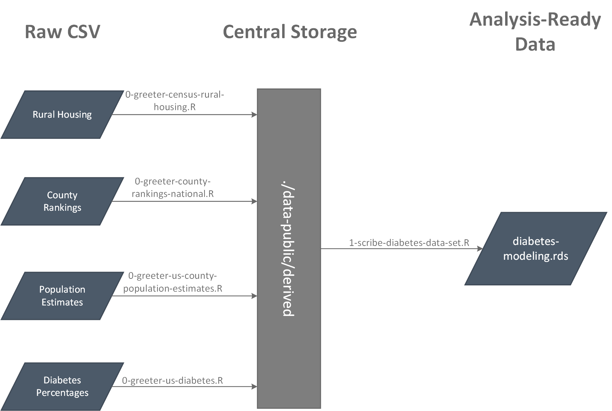
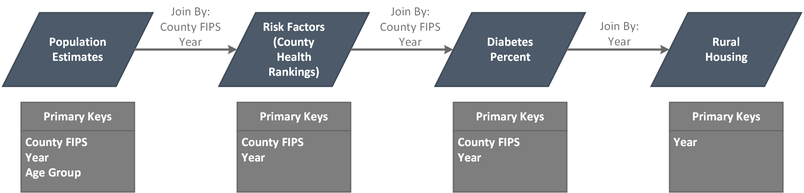

This is the second post in the series exploring Diabetes in rural North Carolina. This post will explore the data used for this project, from collection, cleaning, and analysis ready data.
This is the second post in the series exploring Diabetes in rural North Carolina. This post will explore the data used for this project, from collection, cleaning, and analysis ready data.
Overall there are four data sources that have been used to create the analysis ready data for this project. There is one additional metadata file that contains the list of all county FIP codes, used for linking the various data sets. All data sets use the county FIPS as the county identifier, the county name is added at the end using the metadata. The image below shows the steps taken to achieve the analysis data set, as well as a table below showing the structure of each data set.

| Data | Structure | Source | Notes |
|---|---|---|---|
| 2010 Census Rural/Urban Housing | one row per county | US Census | NA |
| County Health Rankings | one row per county, year | County Health Rankings | Raw data is one year per file |
| Population Estimates | one row per county, year, age group | US Census | NA |
| Diabetes Data | one row per county, year | CDC Diabetes Atlas | Raw data is one year per file |
The first data set comes from the US Census, and contains the amount of housing units inside both Urban and Rural areas. The raw data was taken and used to calculate the percentage of housing units in rural areas, as well as adding the classifications of Rural, Mostly Rural, and Mostly Urban. More about these classifications can be read here. This data set is from the 2010 US Census, which is then used to set the rural classification until the next Census (2020).
View greeter script here
| County Fips | Pct Rural | Rural |
|---|---|---|
| 05131 | 20.41 | Mostly Urban |
| 05133 | 69.29 | Mostly Rural |
| 05135 | 77.84 | Mostly Rural |
| 05137 | 100.00 | Rural |
| 05139 | 55.07 | Mostly Rural |
| 05141 | 100.00 | Rural |
| Note: | ||
| Displaying 6 of 3,143 rows |
The second data set comes from County Health Rankings and contains data for the risk factors associated with diabetes, this data set is complied from many different data sources. The data was downloaded by year, and then combine to form one data set. County Health Rankings uses this data to rate health outcomes across all counties of the United States, for this analysis four categories have been extracted from the overall data set. Note that the food environment index is itself a combine measure, it is a score of both access to healthy food based on distance to grocery stores, as well as access based on cost.
View greeter script here
| Measure | Data Source | First Year Available |
|---|---|---|
| Adult smoking | Behavioral Risk Factor Surveillance System | 2010 |
| Adult obesity | CDC Diabetes Interactive Atlas | 2010 |
| Physical inactivity | CDC Diabetes Interactive Atlas | 2011 |
| Food environment index | USDA Food Environment Atlas, Map the Meal Gap | 2014 |
| Source: | ||
| https://www.countyhealthrankings.org/explore-health-rankings/measures-data-sources/2020-measures |
| County Fips | Year | Adult Smoking Percent | Adult Obesity Percent | Physical Inactivity Percent | Food Environment Index |
|---|---|---|---|---|---|
| 01001 | 2010 | 28.1 | 30.0 | NA | NA |
| 01003 | 2010 | 23.1 | 24.5 | NA | NA |
| 01005 | 2010 | 22.7 | 36.4 | NA | NA |
| 01007 | 2010 | NA | 31.7 | NA | NA |
| 01009 | 2010 | 23.4 | 31.5 | NA | NA |
| 01011 | 2010 | NA | 37.3 | NA | NA |
| Note: | |||||
| Displaying 6 of 34,555 rows |
The third data set also comes from the US Census and contains population estimates for each county in the United States broken down by: year, age-group, sex, race, and ethnicity. For each row in the table the percent of each type of population was calculated using the yearly population total for the county. This breakdown is useful for this project as African-Americans and Hispanics suffer from diabetes at a higher rate then other groups.
View greeter script here
| County Fips | Year | Age Group | Year Total Population | Total Male Population | Total Female Population | White Male Population | White Female Population | Black Male Population | Black Female Population | American Indian Male Population | American Indian Female Population | Asian Male Population | Asian Female Population | Native Hawaiian Male Population | Native Hawaiian Female Population | Not Hispanic Male Population | Not Hispanic Female Population | Hispanic Male Population | Hispanic Female Population | Pct Hsipanic Female Population | Pct Male | Pct Female | Pct White Male Population | Pct White Female Population | Pct Black Male Population | Pct Black Female Population | Pct American Indian Male Population | Pct American Indian Female Population | Pct Asian Male Population | Pct Asian Female Population | Pct Native Hawaiian Male Population | Pct Native Hawaiian Female Population | Pct not Hispanic Male Population | Pct not Hispanic Female Population | Pct Hispanic Male Population |
|---|---|---|---|---|---|---|---|---|---|---|---|---|---|---|---|---|---|---|---|---|---|---|---|---|---|---|---|---|---|---|---|---|---|---|---|
| 01001 | 2010 | 0-4 | 54773 | 1863 | 1712 | 1415 | 1314 | 356 | 319 | 3 | 2 | 13 | 15 | 0 | 0 | 1778 | 1653 | 85 | 59 | 0.11 | 3.40 | 3.13 | 2.58 | 2.40 | 0.65 | 0.58 | 0.01 | 0.00 | 0.02 | 0.03 | 0.00 | 0.00 | 3.25 | 3.02 | 0.16 |
| 01001 | 2010 | 5-9 | 54773 | 1984 | 1980 | 1506 | 1517 | 398 | 369 | 15 | 6 | 15 | 22 | 1 | 4 | 1916 | 1908 | 68 | 72 | 0.13 | 3.62 | 3.61 | 2.75 | 2.77 | 0.73 | 0.67 | 0.03 | 0.01 | 0.03 | 0.04 | 0.00 | 0.01 | 3.50 | 3.48 | 0.12 |
| 01001 | 2010 | 10-14 | 54773 | 2163 | 2129 | 1657 | 1621 | 427 | 409 | 13 | 13 | 23 | 19 | 4 | 1 | 2098 | 2064 | 65 | 65 | 0.12 | 3.95 | 3.89 | 3.03 | 2.96 | 0.78 | 0.75 | 0.02 | 0.02 | 0.04 | 0.03 | 0.01 | 0.00 | 3.83 | 3.77 | 0.12 |
| 01001 | 2010 | 15-19 | 54773 | 2182 | 2047 | 1601 | 1551 | 497 | 426 | 13 | 6 | 25 | 16 | 4 | 2 | 2125 | 1996 | 57 | 51 | 0.09 | 3.98 | 3.74 | 2.92 | 2.83 | 0.91 | 0.78 | 0.02 | 0.01 | 0.05 | 0.03 | 0.01 | 0.00 | 3.88 | 3.64 | 0.10 |
| 01001 | 2010 | 20-24 | 54773 | 1573 | 1579 | 1223 | 1219 | 306 | 316 | 6 | 7 | 6 | 7 | 3 | 2 | 1511 | 1537 | 62 | 42 | 0.08 | 2.87 | 2.88 | 2.23 | 2.23 | 0.56 | 0.58 | 0.01 | 0.01 | 0.01 | 0.01 | 0.01 | 0.00 | 2.76 | 2.81 | 0.11 |
| 01001 | 2010 | 25-29 | 54773 | 1574 | 1617 | 1251 | 1235 | 289 | 341 | 1 | 4 | 9 | 23 | 6 | 3 | 1505 | 1570 | 69 | 47 | 0.09 | 2.87 | 2.95 | 2.28 | 2.25 | 0.53 | 0.62 | 0.00 | 0.01 | 0.02 | 0.04 | 0.01 | 0.01 | 2.75 | 2.87 | 0.13 |
The final data set comes from the CDC Diabetes Atlas and contains the estimated prevalence of diabetes in each county of the United States, by year. The data set also includes the upper and lower estimated limits, see the previous post for an explanation of how these numbers are calculated. The data was downloaded by year, and then merged into one data set for the project.
View greeter script here
| Year | County Fips | Diabetes Percentage | Diabetes Lower Limit | Diabetes Upper Limit |
|---|---|---|---|---|
| 2010 | 01001 | 11.2 | 8.8 | 13.9 |
| 2010 | 01003 | 10.2 | 8.7 | 11.9 |
| 2010 | 01005 | 13.0 | 10.6 | 15.9 |
| 2010 | 01007 | 10.6 | 8.2 | 13.3 |
| 2010 | 01009 | 12.6 | 9.8 | 15.7 |
| 2010 | 01011 | 16.1 | 12.4 | 20.4 |
After all data has been made ready the data is joined into a final analysis ready data set. Each row of this data set represents, one county, one year, and one age group. The data is also filtered to remove Alaska and Hawaii as these states could affect trends seen in the continental United States.
View the scribe script here
